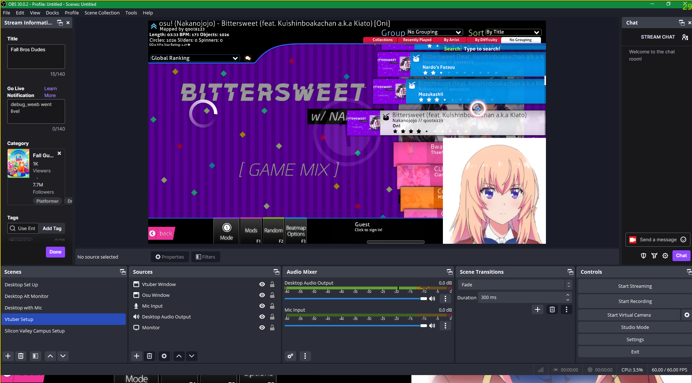

<!DOCTYPE html>
<html>
<head>
    <meta charset="utf-8" />
    <title></title>
</head>
<body>

</body>
</html>
<!DOCTYPE html>
<html lang="en">
<head>
    <meta charset="UTF-8">
    <meta name="viewport" content="width=device-width, initial-scale=1.0">
    <title>Lowell Batacan Portfolio</title>
    <link href="../style.css" rel="stylesheet" />
</head>
<body>
    <div class="container">
        <div class="banner">
            <h1>Lowell Batacan</h1>
            <h3>Gameplay Programmer | Game Designer</h3>
        </div>
        <header>
            <nav>
                <a href="../index.html">Home</a>
                <a href="Projects.html">Projects</a>
                <a href="AboutMe.html">About Me</a>
                <a href="Resume.html">Resume</a>
            </nav>
        </header>


        <!--<section class="boxes">-->
        <div class="box white">
            <div class="box3">
                <h1>AI Vtuber Creative Project</h1>
                <p>
                    <h2>Presentation and Demo</h2>

                    <video width="854" height="480" controls="controls">
                        <source src="../AIVtuberImages/AI%20Vtuber%20Presentation2.mp4" type="video/mp4" />
                    </video>

                    <br />

                    <div class="FileLinks">
                        <h3> Project Files: <a href="https://github.com/AwesomeDudex5/AI_Vtuber">Github Repository</a> </h3>
                    </div>

                    <h2>Overview</h2>

                <p>
                    <b>Duration</b>: 1 Month |
                    <b>Tools</b>: Python, PyGame, Gemini API, Edge TTS, Twitch, OBS Studio |
                    <b>Team Size</b>: 2
                </p>
                <div class="rect-container">
                    <div class="AIrect">AI</div>
                    <div class="PROGrect">Programming</div>
                    <div class="LEVELrect">Design</div>
                </div>

                <br />
                A project that utlizes an LLM like Gemini, Twitch API from the titular streaming platform, and Python coding to create and desgin an interactive AI Vtuber experience.
                It can be easily deployed and interact with chat with a talking with a voice, while simultaneously having gameplay in the background. This project is a basic foundation
                that can be built upon more.


                <h2>Goal</h2>
                I proposed the idea due to my love for anime, vtubers, and unique gameplay and livestreaming experiences. Inspired by the popular AI VTuber,
                <a href="https://www.youtube.com/@Neurosama">Vedal and Neuro-sama</a>,
                I wanted to create an interactive bot that has talking capabiities, able to talk with chat while having a game being played in the background. This project explored how to
                utlize an Large Language Model for roleplaying, freely available text-to-speech options, and how integrate Twitch API, all within Python.


                <h2>Development</h2>

                <h3>Connecting Gemini to Python</h3>
                The foundation of the project was the Gemini API, which would power the VTuber’s conversational abilities. I chose Gemini because, in my experience,
                it consistently produced the most creative and human-like responses, with excellent memory retention—a crucial feature for maintaining coherent conversations. The first hurdle was
                figuring out how to connect Gemini to Python. I started by generating a Gemini API key, which allowed me to access the API’s web services.
                With the key in hand, I wrote a basic Python script to send user input to Gemini and receive responses. At this stage, the program was a simple chat interface:
                you typed a message, and the bot replied in the console.

                <br /><br />

                While this was a good start, it was far from the interactive experience I envisioned. I needed to craft an initial prompt that defined the VTuber’s personality,
                backstory, and conversational style. This prompt would set the tone for every interaction, ensuring the bot stayed in character. For example, I instructed Gemini to respond
                as a cheerful, anime-inspired VTuber who loves gaming and interacting with fans.
                <br />

                

                <br /><br />

                I created a process method that receives the response from Gemini in a JSON output. I then parsed this output and send it to the respective functions to display the right image based on
                emotion, and the message it will say in the Text-to-Speech function. This method is called during the main loop while it is waiting to receive messages from either the user or
                Twitch chat.

                <br />
                
                <br />


                <h3>Sprites and Text-to-Speech</h3>
                With the chatbot functional, the next step was to give the VTuber a visual presence. Traditional VTubers use Live2D, a sophisticated animation technique that brings
                2D illustrations to life. However, creating a Live2D model was beyond the scope of this project due to time constraints and complexity. Instead, I opted for 2D sprites—static
                images that could change based on the bot’s emotional state.

                <br /><br />

                

                <br /><br />

                To display the sprites, I used Pygame, a Python library for creating simple games and graphical applications. I created a window that rendered the
                VTuber’s sprite in real-time, updating it based on the emotion detected in Gemini’s response. For example, if the bot replied with excitement, the sprite would
                switch to a smiling or energetic expression.

                <br /><br />

                

                <br /><br />

                Next, I needed a way for the VTuber to "speak". While ElevenLabs is a leader in AI voice generation, its pricing was too steep for a student project.
                Instead, I discovered Edge TTS, a free Python library that leverages the text-to-speech voices available in Microsoft Edge. This library allowed the VTuber to
                “speak” its responses aloud, adding a layer of immersion to the experience. I chose a specific voice based off the list of available voice options in the library, and
                which sounded the most pleasant when translating from text-to-speech.

                <br /><br />

                Integrating Edge TTS was straightforward, but I ran into a few challenges. For instance, the speech synthesis occasionally lagged, especially with longer responses.
                To address this, I added a delay between receiving the response and playing the audio,
                ensuring the speech stayed in sync with the sprite animations.

                <br /><br />

                
                <br />


                <h3>Twitch Chat and OBS Studio</h3>
                The heart of the project was enabling the VTuber to interact with Twitch chat in real-time. This required integrating the Twitch API into the Python script.
                After creating a Twitch account and obtaining a streaming ID, I used the `twitchio` library to connect to a livestream and read chat messages. The code was
                relatively simple: it connected to the chat channel and processed messages one at a time. While this worked well for smaller streams with fewer messages, it
                struggled to keep up with high-traffic chats.

                <br />

                

                <br /><br />

                To create the illusion of a VTuber playing a game, I needed a visually engaging backdrop. I chose **Osu!**, a rhythm game built in Python,
                for its flashy visuals and anime-inspired music. While the VTuber couldn’t actually play the game, I used Osu!’s **autoplay mod** to simulate gameplay in the background.

                <br /><br />

                Setting up the livestream required OBS Studio, a popular tool among streamers. I configured OBS to capture both the VTuber’s sprite window and the Osu! gameplay,
                blending them into a single stream. This setup allowed me to demonstrate the VTuber interacting with chat while “playing” a game, creating a convincing VTuber experience.

                <br /><br />

                

                <br />


                <h3>Reflection and Future Exploration</h3>
                By the end of the project, I had created a functional AI VTuber that could interact with Twitch chat, speak with a synthetic voice, and simulate gameplay.
                While the result was basic, it laid the groundwork for future enhancements.

                <br /><br />

                Some features I’d like to explore include:
                <ul>
                    <li>Responding to microphone input: Allowing the VTuber to react to voice commands or commentary.</li>
                    <li>Efficient message processing: Improving the bot’s ability to handle high-traffic chats.</li>
                    <li>Dynamic sprites with original art: Moving beyond static sprites to create more expressive animations.</li>
                </ul>


                </p>
            </div>

        </div>
        <!--</section>-->

        <footer>
            <p>
                <hr />
                <h1>Contact Information</h1>
                <h2>
                    <a href="mailto:lowell.batacan@yahoo.com">lowell.batacan@yahoo.com</a> |
                    <a href="https://www.linkedin.com/in/lowell-batacan/">LinkedIn</a> |
                    <a href="https://teitoku-lowliet.itch.io/">Itch.io</a> |
                    <a href="https://github.com/AwesomeDudex5">GitHub</a>
                </h2>

            </p>
        </footer>
    </div>

    <!-- Scroll-to-top button -->
    <button id="scrollToTopBtn" title="Go to top">Top</button>

    <!-- Link to JavaScript file -->
    <script src="../Top-Button-JS.js"></script>

</body>
</html>